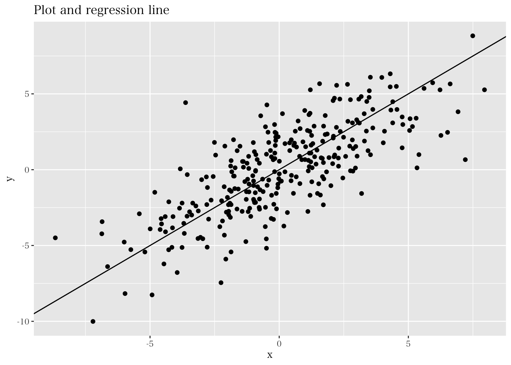

8.2 回帰分析における推定と検定
回帰分析によって係数を推定すると、それが真の（母集団での）値であると勘違いしてしまう人もいる。しかし、分析の結果傾きの係数が正の値だったとしても、母集団においては0と相違がないかもしれない。したがって、説明変数が被説明変数に与える影響を検証するためには回帰係数を計算するだけでは不十分であり、区間推定や検定を行う必要がある。そこで本節では回帰分析に関わる理論的な説明を行う。以下は、我々の着目する回帰モデルである。
\[ y_i = \beta_0+\beta_1x_i+u_i, \] ただし、\(\small u_i\) は誤差項、\(\small \beta_0\)切片、\(\small \beta_1\)は傾きのパラメータである。つまり、このモデルは母集団での統計的特徴を反映した理論的モデルだと理解できる。なお、通常レポートや論文内に回帰モデルを記載する際には、上記のような回帰パラメータと誤差項を含んだ理論モデルを用いる。理論的なモデルは \(\small y\) を説明する要素として確率的な誤差項 \(u\) を含んでおり、被説明変数 \(\small y\) は確率変数として捉えられる。一方で、説明変数 \(\small x\) は、定数として扱う。また、前節で紹介した回帰係数の推定量（OLSE）は、 \(\small y\) や \(\small \bar{y}\) を含んでいる ため、推定量（OLSE）もまた確率変数であると考えられる。

\(y\) の値が確率的にバラつくと考え誤差項を含んでいるのだとしたら、回帰直線は何を表しているのだろうか。理論的には、ある \(x\) の値が与えられたとき、\(y\) の「平均値（期待値）」と \(x\) の間には線形の関係があることを捉えている。より具体的には、回帰直線は以下のように \(x\) を所与とした際の \(y\) の条件付き期待値として表される。
\[ E(y|x)=\beta_0+\beta_1x \] この関係は、以下の図のように示すことができる（Wooldridge, 2013）。
したがって、回帰モデルは、ある \(x\) の値に基づき \(y\) の期待値（平均）示してくれるが、具体的にどのような値を取るかは確率的に決まるものだと言える。つまり、回帰分析の結果によって言えることは、例えば、「身長（\(x\)）の高い人は、\(\color{red}{\text{平均的に}}\)重い（\(y\)）」ということである。
なお、モデル化に際して誤差項について以下のようないくつかの仮定が存在する。なお、5つめの仮定は回帰係数の検定の際に用いられる。
- \(E(u)=0\)
- \(E(u|x)=0\)
- \(Var(u)=E(u^2)=\sigma^2\)
- \(Cov(u,x)=E(xu)=0\)
- \(u\) は正規分布に従う
このような仮定に従うOLSEは、以下の統計的性質を持つ。
- 不偏性:
- \(E(\hat{\beta})=\beta\)
- 漸近的性質:
- \(\hat{\beta}\) は、サンプルサイズ \(n\) が十分大きいときには正規分布 \(N(\beta,~se(\hat{\beta})^2)\) に従う（\(se(\hat{\beta}\))は、OLSEの標準誤差）。
先述の通り、推定されたOLSEは、モデルの真の値ではない。そのため、仮に分析の結果得た推定値が正の値であっても、母数においては0と大差がないかもしれない。そのため、統計的検定や推測を用いて、未知パラメータに対する検討を行う。なお、Rで回帰係数の検定結果を得るのは非常に簡単である。 lm() 関数の実行結果をストアしたオブジェクトに対して、summary() 関数を実行することで統計的検定結果を得ることができる。先程分析した reg1 を再度利用すると、以下のような結果を得る。
##
## Call:
## lm(formula = sales ~ emp, data = firmdata19)
##
## Residuals:
## Min 1Q Median 3Q Max
## -1835142 -280706 -34523 134095 3292333
##
## Coefficients:
## Estimate Std. Error t value Pr(>|t|)
## (Intercept) 22809.679 88556.098 0.258 0.797
## emp 58.132 2.559 22.721 <2e-16 ***
## ---
## Signif. codes: 0 '***' 0.001 '**' 0.01 '*' 0.05 '.' 0.1 ' ' 1
##
## Residual standard error: 872800 on 145 degrees of freedom
## Multiple R-squared: 0.7807, Adjusted R-squared: 0.7792
## F-statistic: 516.2 on 1 and 145 DF, p-value: < 2.2e-16回帰係数の推定と検定に関する結果は Coefficients: の下に記載されている。推定・検定結果は行列形式で表示されており、Estimate の列は回帰係数の推定結果、Std. Error は標準誤差（詳細は省略するが、誤差項の分散推定量の平方根）、 t valueはt値、 Pr(>|t|)はp-value をそれぞれ示している。そして、出力結果下欄には決定係数（R-squared）や自由度調整済み決定係数（Adjusted R-squared）、F検定結果、といったモデル適合度に関する結果が提示されている（詳しくは次節で説明する）。
上記の結果を解釈するために、回帰分析における検定について説明する。ソフトウェアで自動的に出力される統計的仮説検定は、基本的には以下の帰無仮説と対立仮説を採用したものである（添字は省略）。 \[ H_0:\beta=0,~~H_1:\beta\neq0 \] なお、R以外のソフトウェアを用いて回帰分析を実行しても係数に関する検定結果を返すが、通常はこの帰無仮説を採用した検定結果を出力する。
検定では、以下のような検定統計量を用いる。
\[ t=\frac{\hat{\beta}-\beta}{se(\hat{\beta})} \]
\(H_0\) が正しいと仮定する（\(\small \beta=0\)）と、検定統計量 t は計算可能であり、自由度（\(\small n-2\)）のt分布に従う。検定の手順は 7.8 節で紹介したのと同様、有意確率に基づく臨界値を定めた後、t 値を計算し、棄却域と採択域のどちらに入るのかを確認する。
\[ \begin{cases} |t|>t_{\alpha/2}(n-2) & \Rightarrow \text{H0を棄却する。}\\ |t|\leq t_{\alpha/2}(n-2)& \Rightarrow \text{H0を採択する。} \end{cases} \]
これを踏まえて分析結果を確認すると、emp が sales に与える影響（係数: 58.132）は有意に0とは異なると理解できる。また、切片の係数（Intercept）は大きな値を取っているが、統計的には0ではないとは言えないことが示されている。この項は、従業員数が0のときの企業の売上を示しており、この結果が統計的に有意ではないということは、我々の直感とも整合的である。
上記の検定によって、どうやら emp の係数は0ではなさそうだということが伺えた。しかし、具体的にどのような値を取るのだろうか。おおよその値だけでも把握したいのが人情である。そこで、信頼区間を求め、おおよその確率（95%など）で真のパラメータが含まれている区間を確認したい。OLSEの漸近的性質と中心極限定理により、サンプルサイズが十分に大きいとき、先述の統計量 t は標準正規分布にに近づく（西山ほか,2019）。
そのため、7.6節で紹介した、標準正規分布に基づく信頼区間の推定を応用できる。信頼係数を \(\small \alpha\) とすると、以下の確率と区間の対応関係を得る。
\[ P\left(\left|\frac{\hat{\beta}-\beta}{se(\hat{\beta})}\right|\leq z_{\alpha/2}\right)=1-\alpha \]
そして、上記を \(\small \beta\) に関する不等式に変換すると、以下の信頼区間を得る。
\[ P(\hat{\beta}-se(\hat{\beta})\cdot z_{\alpha/2}\leq\beta\leq\hat{\beta}+se(\hat{\beta})\cdot z_{\alpha/2})=1-\alpha \]
したがって、\(\small [\hat{\beta}\pm se(\hat{\beta})\cdot z_{\alpha/2}]\) という観察可能な情報によって信頼区間推定できる。Rによって信頼区間を得るには、回帰分析の結果に対して、confint() 関数を用いる（デフォルトで95%信頼係数が設定されている）。例えば、先程の reg1の結果を用いて、99%信頼区間を得ると、以下のような結果を得る。
## 0.5 % 99.5 %
## (Intercept) -208335.9722 253955.32943
## emp 51.4537 64.81018したがって、emp の99%信頼区間が [51.45, 64.81] であることがわかった。すなわち、企業の従業員が一名多いと、売上高が 51から64 百万円高くなりそうだと解釈できる。一方で、(Intercept) の信頼区間には0を含んでいることが伺える。なお、confint() 関数によって計算される信頼区間の計算では上述の通り正規分布が仮定されており、詳しくはヘルプ（?confint）で確認できる。